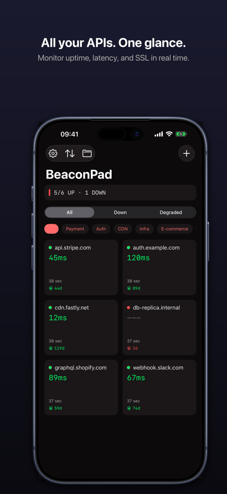
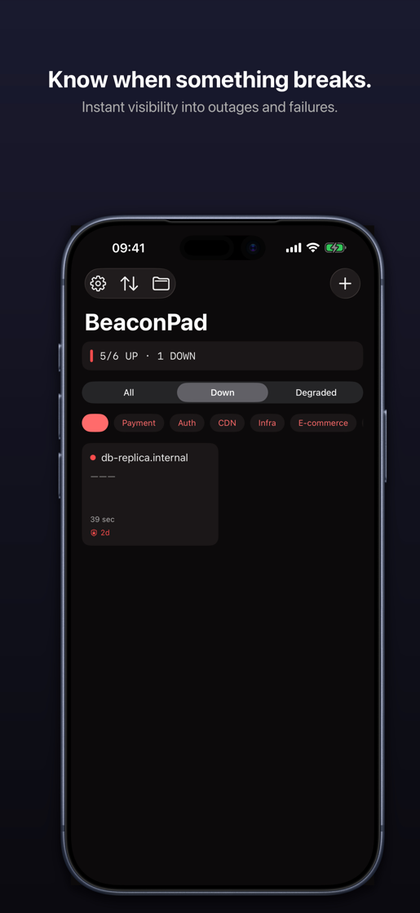
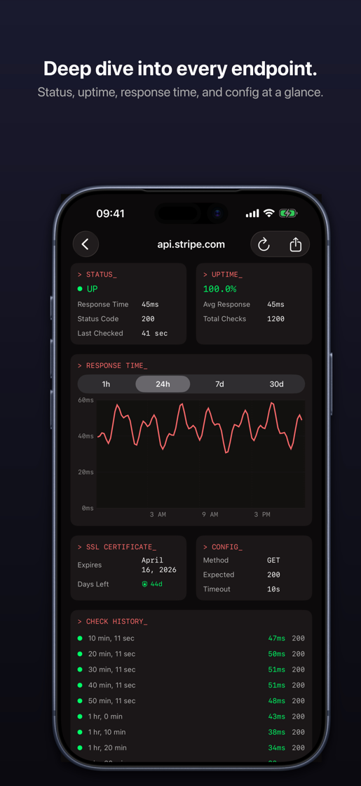
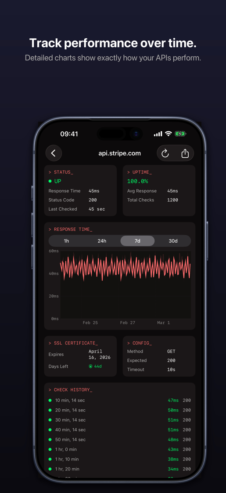
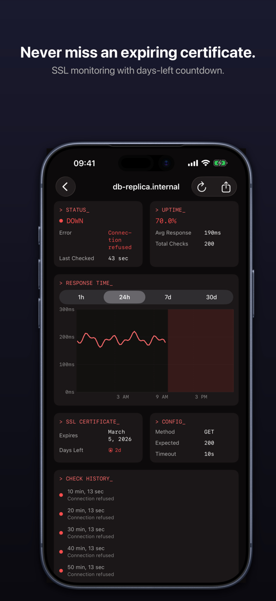
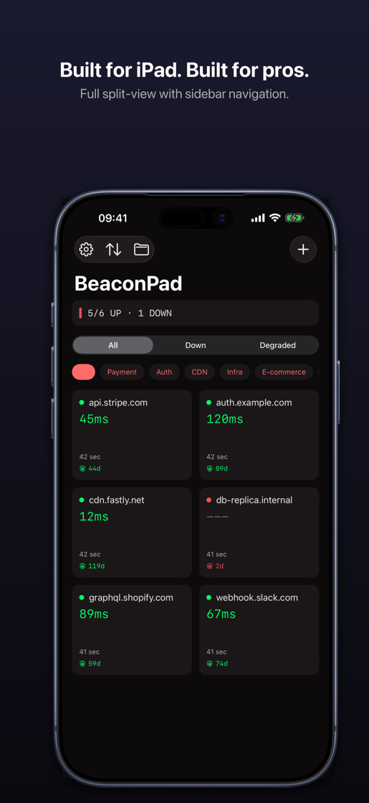

Monitor Dashboard
See all your APIs at a glance with color-coded status indicators.
BeaconPad monitors your APIs around the clock. Get instant status updates, response time sparklines, SSL certificate warnings, and push notifications when things go wrong.
Comprehensive API monitoring, designed for mobile.
See all your APIs at a glance with color-coded status indicators.
Mini charts showing response time trends over the last 24 hours.
Get notified before your SSL certificates expire.
Instant alerts when an endpoint goes down or recovers.
Monitor your APIs even when the app is closed.
Track uptime percentages and incident history over time.






Color-coded status dots, response time sparklines, and aggregate health summary. See all your APIs at a glance.
Interactive line charts with p50-p95 fill, anomaly markers, and time windows from 1 hour to 30 days.
Down alerts with flap protection (2 consecutive failures). Recovery notifications include downtime duration. Quiet hours support.
Automatic SSL expiry detection with proactive warnings at 30, 14, 7, 3, and 1 day thresholds.
Background health checks even when the app is closed. Prioritizes down monitors and batches up to 15 endpoints.
One-time purchase. No subscription.
$6.99
One-time purchase